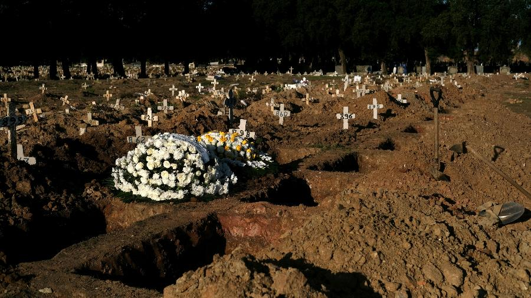
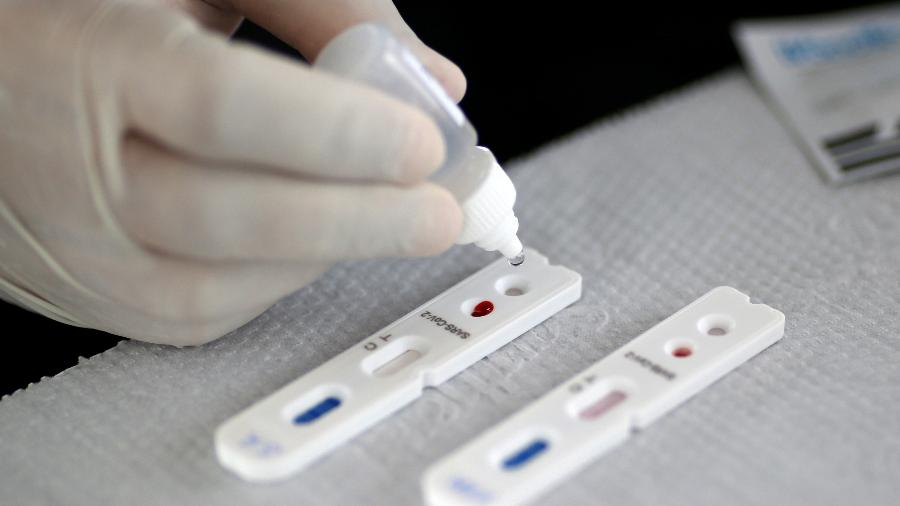
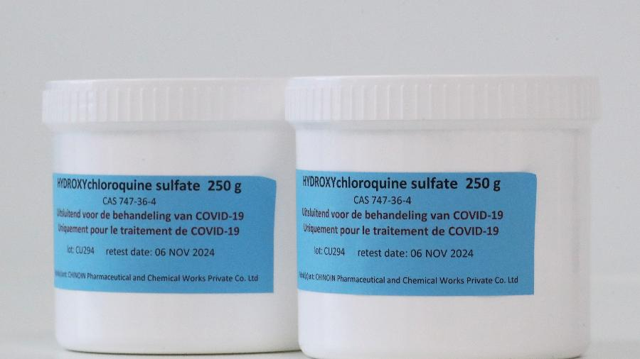
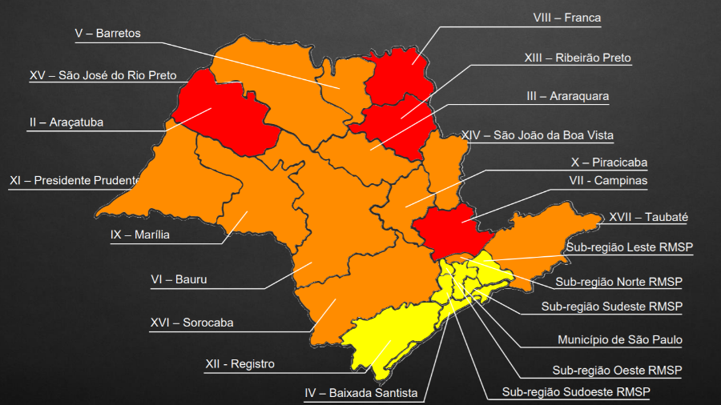
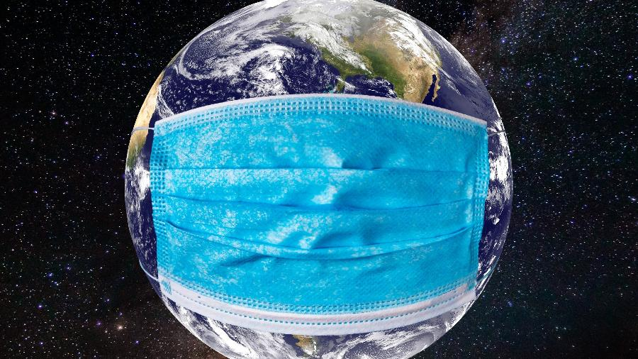
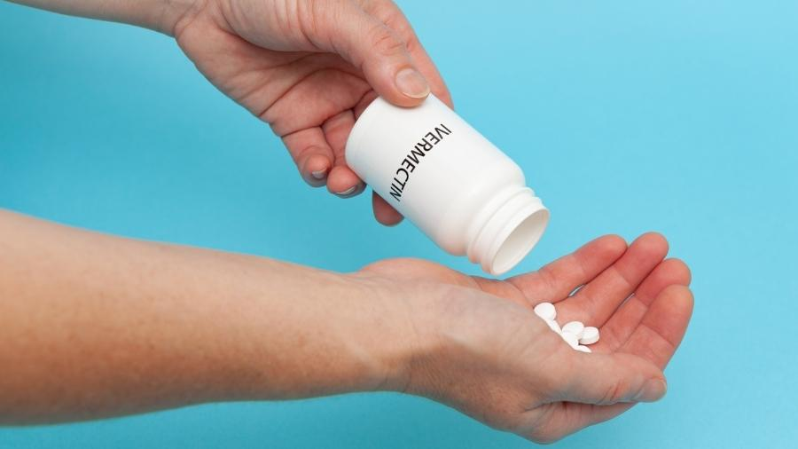

 Covid-19: Brasil ultrapassa marcas de 70 mil mortes e 1,8 milhão de casos Leia a Materia 10 de julho de 2020
 Coronavírus: Mundo ultrapassa 12 milhões de casos, aponta balanço da OMS Leia a Materia 10 de julho de 2020
 OMS diz que hidroxicloroquina só deve ser usada para covid-19 sob estrita supervisão médica Leia a Materia 10 de julho de 2020
 Coronavírus: estado de São Paulo tem quatro regiões na fase vermelha Leia a Materia 10 de julho de 2020
 Mundo bate recorde em número de casos diários de coronavírus, diz balanço Leia a Materia 10 de julho de 2020
 Anvisa faz alerta sobre ivermectina e não recomenda uso contra a covid-19 Leia a Materia 10 de julho de 2020